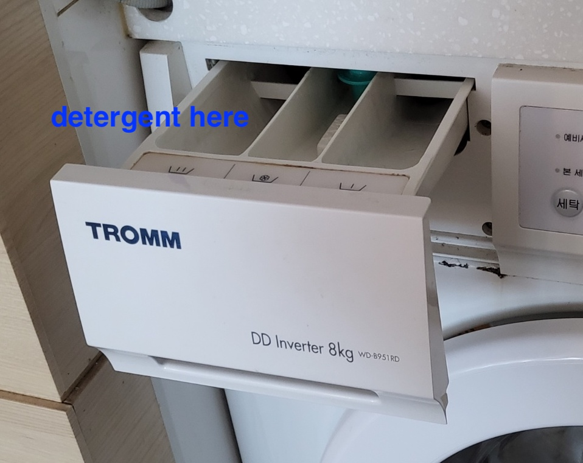
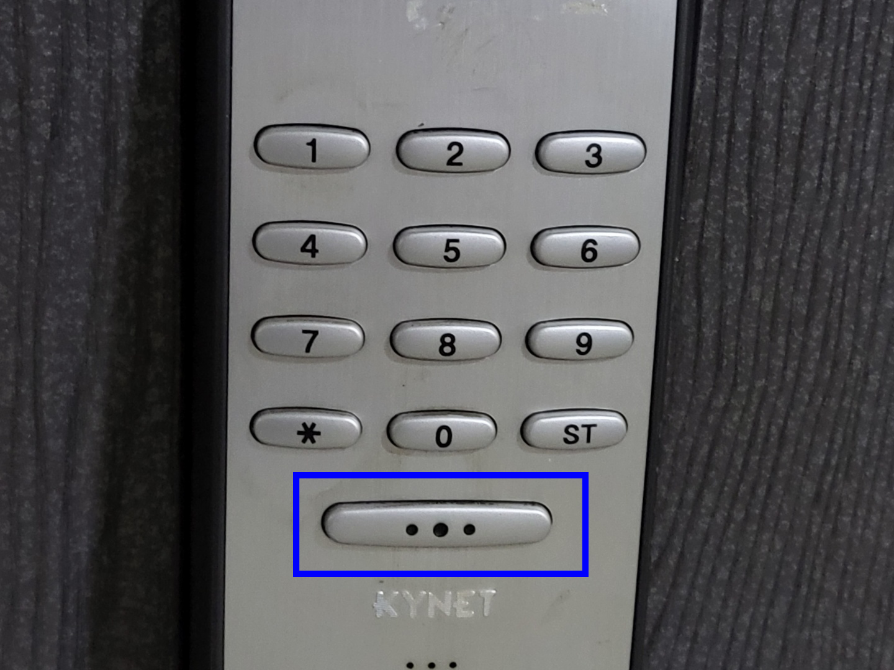
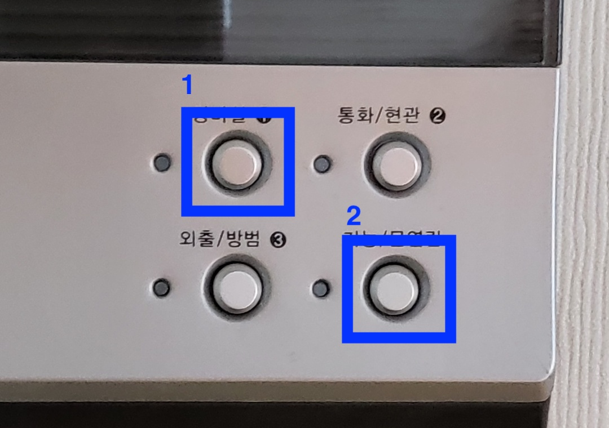

Undecided Stay FAQ
How to use a washing machine
-

As shown in the picture above, put the detergent in the detergent compartment
(The detergent is in the right drawer) -

Press the power button and proceed with the laundry setting as desired
-
Press the Action button to start washing.
After drying, the washing machine door will not open until the temperature drops to a certain degree. Please wait a little bit and open the door
How to use the door lock
-

Press the button in the picture above and enter the password you received when the keypad is activated.
If the door does not close properly to the end, a warning tone will sound. Please press the door to close when you go out.
How to use a turntable
-

If you turn the volume key, ON lights up and the LP turns on
-

Raise the BTOUT lever to ON
-
Place the pin on above of the plate
-

Lower the lever and lower the pin onto the LP
Please finish the turntable when you check out or go to bed. Please proceed in the reverse order of the above explanation. You need to be careful when replacing the LP because it can be damaged if it is scratched by a pin.
When my friend called me at the joint entrance
-

Press the security button
-
Press the door open button